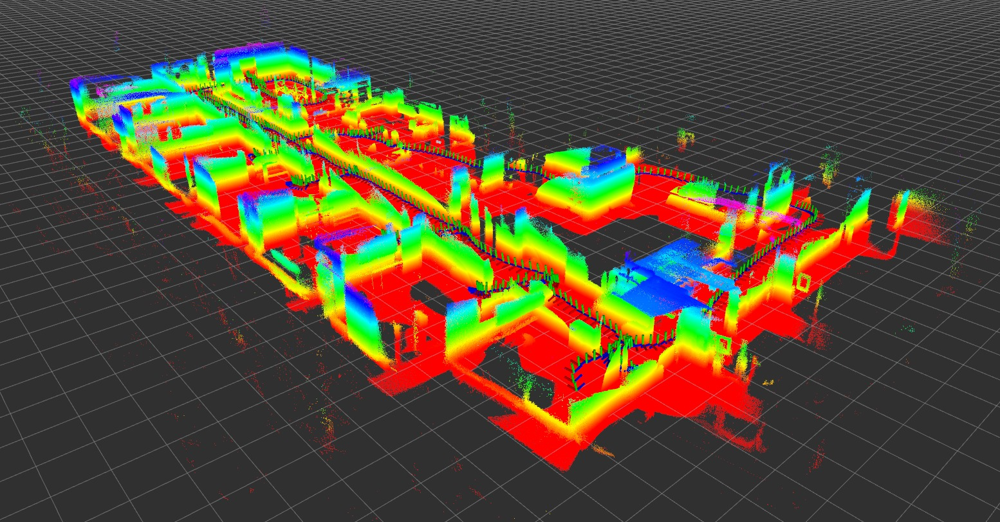

The GRASP MultiCam Data Set
The GRASP MultiCam data set combines recorded images from a synchronized stereo monochrome camera and IMU with those from a depth sensor. The stereo camera / IMU device allows for accurate Visual-Inertial Odometry (VIO), which can then be used to recover 3D structure from the depth sensor point clouds.
The data covers indoor and outdoor scenes. The recording devices are always carried by hand. All data is in ROS bag format.
| Falcam Rig | Falcan 250 Quadrotor |
For the earlier datasets, a
Falcam (ovc version 0)
synchronized stereo camera/IMU is used, combined with
a
Monstar Time-Of-Flight (TOF) sensor
and an unsynchronized PointGrey/FLIR color camera. It
is cobbled together with zip ties and double sided tape into a rig.
|
An aerial robot is carried around that has all
the sensors connected to it. Again the synchronized stereo camera/IMU is a custom device made
by the Open Source Robotics Foundation, but
this time it is an Open Vision Computer OVC 1.
No color camera is present, but either a
Monstar Time-Of-Flight (TOF) sensor
or an Astra RGBD sensor
|